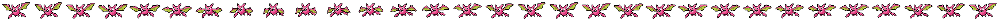

Your saves are backed up, and your library follows you to every device you sign in on.
Signed in with Google
Screens
Gap
Turn
The game turned the DS off
Its save is kept. Restart to switch it on again.
LR
SELECTSTART
BA
P1 · Keyboard
P2 · Gamepad
dingbat
a game boy & game boy advance emulator
Paused
Drop a game file anywhere on the page
.gba, .gb, .gbc, .nds or a .zip
Already playing on another device?
Library
No games match.
Drop to add the game
⌛ waiting for peer
Update Available
Updating now will erase any unsaved data. Make sure you've saved your game before continuing.
File Check Failed
Add pictures to your library?
dingbat can open each game, pick up where you left off, take a picture of the screen for its library card, and close it again. It takes a few seconds a game. Your games and saves are not changed.
You can do this later from Add pictures, above your library.
Include games kept only on DriveEach one is fetched, pictured, and not kept on this device
Opening…
Manage Saves
Save file
Export save fileDownload the game's own save (.sav) — your in-game progress
Import save fileReplace the game's save (.sav) and reload it
Reset save fileWipe this game's save and reload it as a fresh cartridge
Save from before you deleted this game
Save state file
Export stateDownload the current state as a .state file (desktop-compatible). Manage slots in Save States.
Import stateApply a .state file to the running game
Save States
Load a game to use save states.
Tap a slot, then Save or Load. Slot 1 is the Quick slot.
Resume from earlier
Rewind
Drag the film strip to pick a moment. Everything to the right of the line is discarded.
Rewind tonow
oldestnow
Save a Clip
Drag the two markers to pick the moment. Everything between them is saved as a video.
Clipthe last 10s
first frame of the clip
oldestnow

Recording clip
The last 10s
0%
Report a Bug
Describe what went wrong. You can attach a save state from the moment it happened — scrub the timeline below to find it. Nothing is sent anywhere; this downloads a report file you can share.
Attach a momentnow
Slide left to go further back in time. Enable Rewind in Settings to capture a longer timeline.
Cheats
No game loaded.
Game Genie, GameShark and Action Replay codes. Toggle the box to enable a cheat. Codes are saved per game in this browser.
Add a cheat
Printed Photos
Anything a game prints to the Game Boy Printer lands here.
Nothing printed yet.
Settings
Controls
Large on-screen controlsA bigger d-pad for touch — best for large fingers
Buttons in landscape
Bold shows up on any picture
RumbleBuzz and shake when a game uses its rumble motor
Touch direction input
D-pad buttons or an analog-style joystick
Joystick behavior
Fixed stays put; floating follows your thumb
Hide touch controls with a controllerHide the on-screen buttons while a game controller is connected
Show inputs on screenLight up a small controller over the game as you press buttons — for streams, or for watching your own inputs. Recorded clips never include it.
Opening a game from the library
Resume goes back to the moment you left. From save starts from the game’s own save, and offers the moment after.
Keyboard
Preset
Click a key, then press its replacement. Saved automatically.
Shortcuts
Pause / ResumeSpace
Fast forward (hold)Tab
2× speedShift+Tab
Slow motionShift+`
Rewind (hold)`
Pause & step one frame.
FullscreenF
Zoom the screen (double-click resets)Ctrl+Scroll
MuteM
Show inputs on screenI
Save stateF5
Load stateF8
ScreenshotF9
DS: next screen arrangementV
DS: swap the screensB
DS: turn the screens (book)O
DS: close / open the lidN
DS: blow into the microphone (hold)H
If a game key and a shortcut share a key, the game wins.
Controller
Fast forward (hold)RT
Rewind (hold)LT
Menu, pausedR3 / Guide / hold Select+Start
Move / pressD-pad / A
Back / closeB
Library: game optionsY
Library: resume the gameStart
Library: filter / sortLB RB / LT RT
Game Boy screen
PaletteThe four colors black-and-white games are drawn in. Color games are never affected.
Super Game Boy games bring their own colors, so there are no shades to replace. Turn it off below to use a palette.
In use
Pick
Super Game Boy
Super Game Boy modeAdds color, and a border, to black-and-white games that were made for the Super Game Boy adapter. Other games are unaffected.
Show borderA border makes the picture wider, so the screen changes shape when one appears.
Boot ROM
GBC BootromNot set
With a boot ROM set, Game Boy games play the startup animation first.
BIOS
GBA BIOSNot set
Play BIOS introPlay the GBA startup animation first. Needs a BIOS file
BIOS calls (SWI)
Changes apply the next time a game is loaded.
Screens
Automatic shows both screens whichever way they come out bigger. Focus shows one large and the other small; tap the top screen to swap them. The screens button in the top bar has these too (V on a keyboard)
Gap
How far apart two screens shown together sit. Like the console is about the real distance, in pixels
Turn
For games played with the console held sideways like a book. Book, left puts the touch screen on the right (O on a keyboard)
Bottom screen firstSwap the screens: the touch screen on top, or the large one in Focus (B on a keyboard)
Hide the top bar while playingOn a phone held upright, the screens take the bar's room. The handle at the top brings the bar back
BIOS and firmware
ARM9 BIOSHLE
ARM7 BIOSHLE
FirmwareBuilt-in
None of these are needed: without them DS games run on dingbat's own BIOS and a built-in firmware. Dumps from your console (bios9.bin, bios7.bin, firmware.bin) apply the next time a DS game starts.
Console settings
Name–
Birthday–
Language–
Colour–
Built-in firmware
The console's own settings, which games read for your name, birthday and language. A game (or the DS menu) that changes them keeps the change, on this device only; your firmware.bin stays as it is, and Reset goes back to its settings. Changes apply the next time a DS game starts.
DS games stay on this device: Google Drive sync skips them, and save states, rewind, the link cable and cheats are not available for them yet.
Color correctionMatch the colors the original screen produced
FilterSmooth the pixel art, or draw the screen's own grid and subpixel structure
Integer scalingKeep every pixel exactly the same size
LCD responseColors settle slowly, the way the real screen did, so flickering sprites look see-through instead of blinking
Ambient glowFill the background with a soft glow of the screen's colors
Audio interpolationSmooths GBA music between hardware samples for cleaner treble. Turn off for the exact sound of a real GBA's headphone jack, grit included.
Enhanced music synthesisExperimental. Re-creates supported games' music engines at higher quality than the hardware could mix. Changes the sound's character; engages itself only where it works.
Pitch-correct fast-forwardKeep the pitch normal at 2× speed instead of everything sounding like chipmunks. Uses a little extra CPU, only while fast-forwarding.
Analog filterSoften the treble the way the GBA's own output filter and speaker did. Pair with interpolation off for the closest real-hardware sound. GBA games only.
Play in Silent ModePauses audio from other apps while a game is playing.
Mute parts of the sound to hear the rest on its own. Stays until you turn it back on or reload the app.
Tone channelsThe square, wave and noise voices every Game Boy and GBA game uses (PSG)
Sample channelsRecorded sound and most music in GBA games (Direct Sound); Game Boy games have none
App theme
Google Drive
Emulation
RewindHold the rewind button to jump back, or double-tap it for a timeline you can scrub. Costs a few percent of speed; turning it off hides the rewind button.
Run-aheadCuts the delay between pressing a button and seeing it happen, by guessing the next frame. Costs extra CPU; ignored at 2× speed and in multiplayer
Force updateRe-download the app and reload. Only needed if an update seems stuck.
Diagnostic logThe app's log and build details, ready to paste into a bug report.
Every time a game writes its save, also send the save file to this address as an HTTP POST (form field “save”). Leave empty to turn off. Synced to your other devices when signed in.
DS BetaLets Nintendo DS games load. An early, incomplete DS core: some games won't run. Turned off, DS games leave the library until it is on again; their saves are kept.
Reset all settingsPut every setting back to its default. Your games and saves are kept.
Connect link cable
Enter the same code as your friend.
Trade codes with your friend — any messenger works.
Same Wi-Fi is the most reliable.